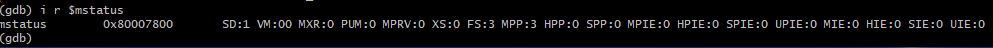
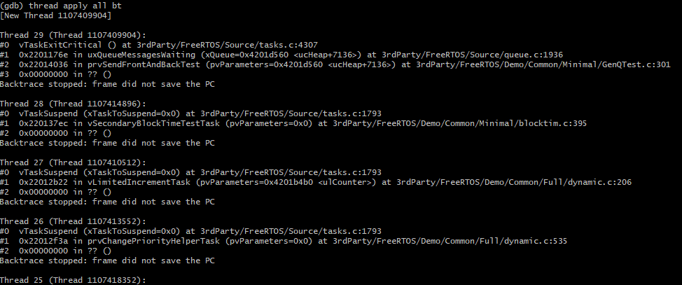
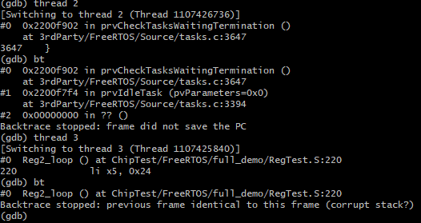

1. Chip debugging¶
The purpose of chip debugging is to quickly analyze and solve the problems of software and hardware.
The debugging methods are: hardware simulator (such as the early 8031), hardware emulator, logging and so on. Historical reference for microprocessor debugging A history of uP debug, 1980 – 2016. The new processor adds on-chip debugging components (OCD/ICE), which can be used to implement online simulation.
Hardware interface of debugging component:
- Single wire (debugWIRE): In order to reduce the cost and the overhead of debugging pins, only one signal wire (RESET) can be used to complete the interaction of debugging information, achieve the function of controlling program flow, executing instructions and programming fuse bits
- Two-wire (SWD): SWDIO--serial data line; SWDCLK--serial clock line
- Four-wire (JTAG): TCK--test clock input; TDI--test data input, data is input to the JTAG port through TDI; TDO--test data output, data is output from the JTAG port through TDO; TMS--test mode selection, TMS is used to set the JTAG port in a specific test mode
1.1. JTAG¶
JTAG (Joint Test Action Group) is an international standard test protocol (IEEE 1149.1 compatible), mainly used for internal chip testing. Now most advanced devices support JTAG protocol, such as DSP, FPGA device and so on. The standard JTAG interface is 4 wires: TMS, TCK, TDI, TDO, which are the mode selection, clock, data input and data output lines respectively. There is also an optional pin TRST, which is used to test the reset. It is an input pin and is valid at low level.
The JTAG interface can be used one-to-one, or it can form a one-to-many topology of a daisy chain. The topology is shown in the figure below:
JTAG interface connection
1.2. Debugging environment¶
- Debugger (GDB) on PC
- Software debugging agent (OpenOCD)
- Hardware debugging agent/adapter (FT2232)
- Debug target (RISC-V)

Schematic diagram of debugging environment
2. RISC-V debugging components¶

RISC-V debugging system framework
As can be seen from the above figure, the framework is divided into three parts, namely Debug Host, such as PC; Debug Transport Hardware, such as debugging tools such as JLink or CMSIS-DAP; The third part is the debugging module embedded in the chip. Inside the debugging module, the DTM module directly interacts with the debugging tool, and it interacts with the DM module through the DMI interface.
3. OpenOCD¶
3.1. Introduction¶
OpenOCD is an open source software debugging agent that can support debugging and programming of various architecture processors; it supports various debugging hardware agents/adapters: FTDI, J-link, etc. OpenOCD receives commands (socket) from GDB, and communicates with debugging components on the chip through hardware agents to complete various debugging tasks.
OpenOCD also has a telnet server that can perform some independent operations. Specific reference https://github.com/ntfreak/openocd.
3.2. FT2232¶
FT2232 is one of a series of USB-to-serial bridge chips produced by FTDI.
The first number 2 indicates that the chip has 2 serial-to-serial components; the suffix letters represent specifications (speed, etc.).
Its special feature is that each serial port component inside it implements MPSSE, which can realize USB to JTAG conversion, so it is widely used in the hardware of JTAG emulators.
By default, the chip is identified as 2 serial ports (from USB transfer). OpenOCD support for FTDI series: use MPSSE as JTAG hardware interface through specific drivers.
Use under Windows requires adjustment of the driver (Zadig, WinUSB), use under Linux requires attention to permissions.
Because there are two serial port components (interface) inside FT2xxx, it is necessary to select which interface the JTAG port is located in in the configuration of OpenOCD.
- Sipeed USB debugger: based on FT2232d, low speed, JTAG port is located at interface 0, no EEPROM, need to use Zadig for driver replacement. Changing the USB port may lose the drive configuration.
- Bouffalolab debugger adapter board: based on FT2232HL, fast speed, JTAG port is located in interface 1, and has EEPROM. After programming with FT_Prog, you can directly use UsbDriverTool to switch drivers. Changing the USB port will not lose the configuration.
- Except for the fixed pins of MPSSE to JTAG, other pins can be customized to different functions, such as but not limited to: SRST, TRST, LED.
- Can support two-wire debugging interface, such as SWD and cJTAG (currently 602 does not support)
4. GDB¶
GDB --- GNU Debugger, is the standard debugger in the GNU software system. Its functions are as follows:
- Can be transplanted to different platforms to run, functions can be configured
- GDB supports debugging of various architectures: ARM, RISC-V, MIPS, x86,…
- GDB supports debugging in various programming languages
- GDB is a command line tool by default, but it also has a graphical front end, such as the debug GUI in eclipse
- The current RISC-V GDB is more convenient to use under Linux: tab completion, path completion, command history,...
5. Debugging actual combat¶
Start the OpenOCD debugging agent from the command line, which waits for GDB connection on port 3333 by default
- openocd.exe -f if_bflb_dbg.cfg -f tgt_602.cfg
- Need to provide configuration script when starting openocd
- In order to separate the debugger hardware and the target chip, here is divided into two scripts
- The beginning of if is the debugger hardware configuration, and the beginning of tgt is the target definition, for example, tgt_702.cfg is the target configuration of 702
- If you want to connect, just attach without any initialization/change to the target, you need to use the _attach script, such as tgt_602_attach.cfg. This is usually used when connection debugging is required after an abnormality occurs in offline operation
If it is XIP code, you need to burn it first and then debug
- Currently OpenOCD + GDB cannot achieve 602 SPI/XIP flash programming
- Start GDB from the command line
- riscv64-unknown-elf-gdb freertos.elf –x 602.init
- freertos.elf is the program to be debugged
- Among them -x specifies some initialization commands related to the target (target type, connection method, mem map)
- The mem map will affect the behavior of the breakpoint (BP), and the ro area will use the hardware breakpoint (Hardware Breakpoint)
- GDB will connect to OpenOCD according to its configuration
- Can support remote debugging, that is, OpenOCD and GDB are not on the same PC
Load the content of the debugged elf file (code) under GDB
For code running on ram, use the following command
- load
- After executing this command, the PC will be set to the entry address of elf
For the code running on XIP, load is unnecessary and cannot be used, because XIP programs need to be programmed with a programming tool before debugging, and writing to the XIP area may cause unknown errors. In addition, the XIP program needs to rely on ROM code (0x21000000) to initialize the related software and hardware, so the following configuration is required:
- set $pc = 0x21000000
- set $mie = 0
- set $mstatus = 0x1880
Operational control
Single step execution (step and next): s, si, n, ni
- "I" is the instruction level, the difference between step and next is that next will not enter the function call
- si 4 <- step 4 instructions
Display the assembly instruction context: set disassemble-next-line on
Return from the current function: finish / return
Continue program execution (continue): c
Breakpoint
- Make a breakpoint at the function main: b main
- Set a temporary hardware breakpoint at the function main: thb main
- Hardware breakpoints are limited resources, there are 4 on 602
- Conditional breakpoint: stop at main when argc is 3: b main if argc == 3
- Specify (source code) type data breakpoint (watch point): watch *(uint32_t *)addr
- List all breakpoints: i[nfo] b
- Enable/disable breakpoint No. 1: enable/disable 1
- Delete breakpoint No. 1: d 1
View information 1
Read the register and display it in hexadecimal: p/x $a0
Check the register: info register <- abbreviated as "i r"
- i r $mstatus
View register
Modify the register value: set $a0 = 0x5a5a5a5a
Modify the value of variable x to 5: set var x = 5
Check the memory and output 32 words in hexadecimal: x/32xw 0x22008000
View variables, output hexadecimal: p/x pxCurrentTCB
Format the memory as a structure: p/x *(TCB_t *)pxCurrentTCB
Display in string format: p/s pxCurrentTCB->pcTaskName
Output structure member address: p/x &(pxCurrentTCB->pcTaskName)
"Beautify" structure output: set print pretty on
View information 2
- Get current debugging file information: info files
- Get all the functions of the current debug file: info functions
- Get the code location pointed to by the register value: info line *($ra)
- Get source information related to an address: info line *0x2200f7f4
- View the current source code (list): l
- View the source code of the function main: l main
- View the source code starting at line 123 of file main.c: l main.c:123
- Display the current call stack (backtrace): bt
- Display the current location: where
Disassembly
Disassemble 10 instructions from the current PC – 10 position: x/10i $pc – 10
Disassembly function main: disas main
- Disassemble function main in mixed source code mode: disas /m main
- Display the machine code as well as the assembly instructions: disas /r main
Disassembly address 0x22008000: disas 0x22008000
dump/restore memory
Save 128KB memory starting from 0x21000000 to file rom.bin:
- dump binary memory ./rom.bin 0x21000000 0x21020000
Restore the file ram.bin to memory 0x22008000:
- restore ram.bin binary 0x22008000
File path mapping
If the source code path in elf is inconsistent with the source code path in the current debugging environment. For example: compiling under WSL and debugging on windows, use the following command to map the search path of the file:
- set substitute-path /mnt/c c:
- Add a symbol table
If you find that the system has a problem in the ROM area when debugging the XIP code. Because the elf symbol of the XIP user program is currently loaded, GDB cannot prompt the detailed information of the ROM code. At this time, you can use the following command to add the symbol table of the bootloader for debugging:
- add-symbol-file bootloader.elf
If the link address of the elf file is offset from the running address, this command can also be processed accordingly.
- Script
Use user scripts to add some operations, for example, there is currently a script freertos_fault.gdb. Its function is to try to restore the context of the current task for analysis after a freertos system fault.
The script is a text file and can be updated at any time
Instructions:
- source freertos_fault.gdb
- freertos_fault
- Freertos awareness
GDB supports thread debugging
OpenOCD supports the awareness of some OS, including FreeRTOS
- However, FreeRTOS awareness on RISC-V is currently not supported
The current code is hack in nature, there are still many problems
Please see the code, compile and use process: http://10.28.10.249:3000/dytang/bl602_openocd/src/as_patch_set
Effect:
- info threads

Effect
View the call stacks of all threads:
- thread apply all bt
Call stack effect
Switch thread 2 (may cause problems): thread 2
Switch thread 2 effect
Print the TCB of thread 2:

- Other
Under GDB, the commands inside the debugging agent can be called through the mon (monitor) command
For example: call the built-in command of OpenOCD to adjust the JTAG frequency:
- mon adapter_khz
- mon adapter_khz 8000
- RISC-V SBA
If you want to view the memory data while RISC-V is running, you need:
- RISC-V core needs to support System Bus Access <- 602 support
- Open SBA in OpenOCD: riscv set_prefer_sba on <- tgt_* in the default configuration
- When GDB is in the continue state and cannot accept more user commands
- Start a telnet program and connect to the OpenOCD telnet server port (default 4444)
Use mdw command to do mem dump word:

Use mdw effect
Other telnet commands can be obtained using help